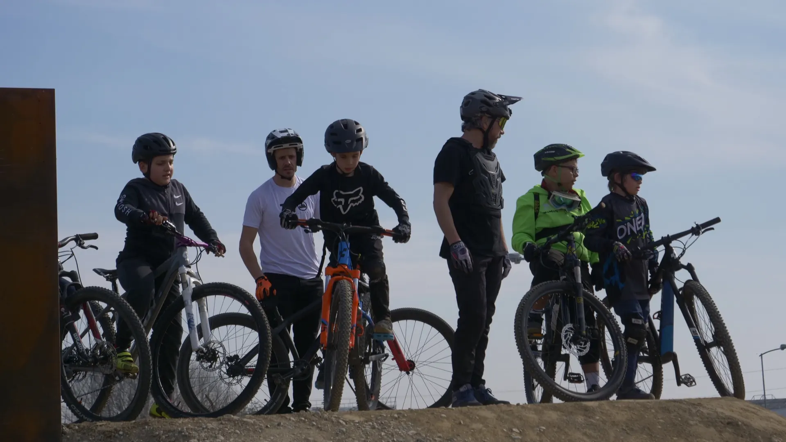
Pumptrack
Ritmo puro.
198 metri, 7 curve paraboliche e un wallride. Realizzato da Velosolution.
Come arrivarci →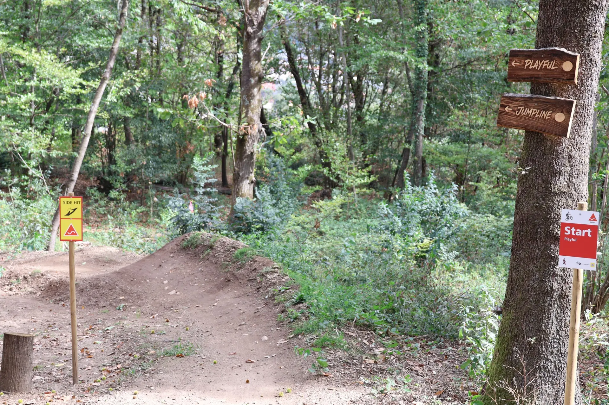
Trails, jumpline e pumptrack nel cuore della Capriasca. Aperto a tutti.
Un luogo dove la MTB crea community.
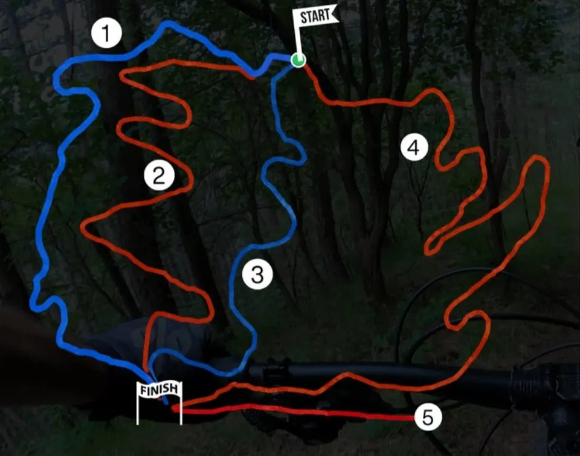
Facile
Media e difficile
Facile
Media
Media

198 metri, 7 curve paraboliche e un wallride. Realizzato da Velosolution.
Come arrivarci →Il Bikeyard è un'infrastruttura sportiva pubblica, aperta gratuitamente a chiunque pratichi la mountain bike.
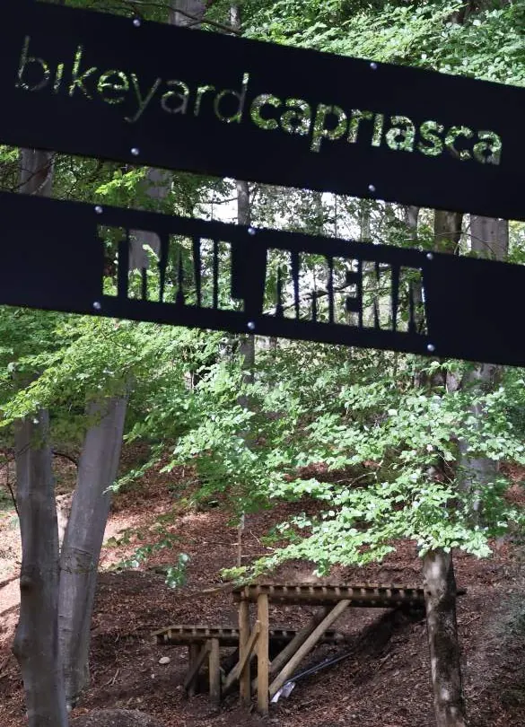
Compleanni, team aziendali, gruppi di amici.
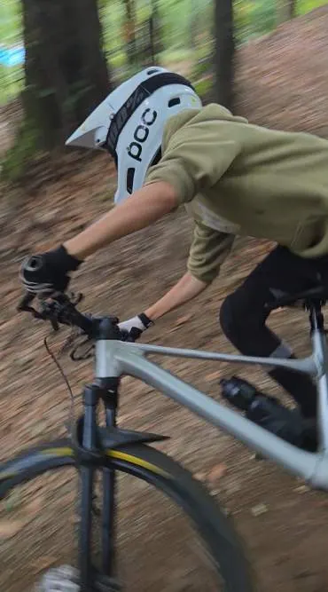
Sessioni tecniche per rider e squadre.
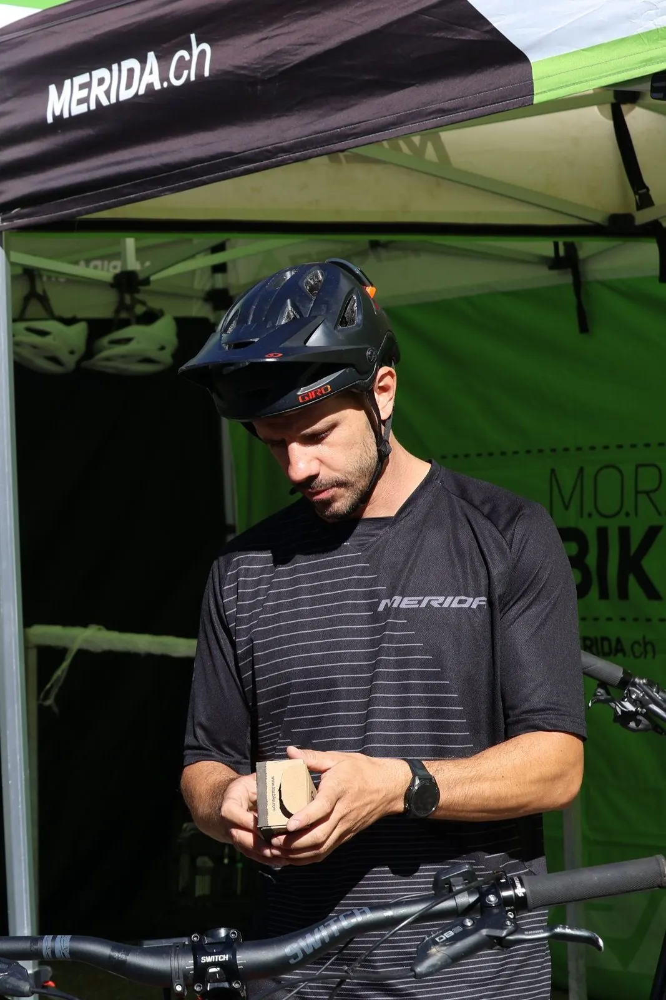
Fai provare i tuoi prodotti sul terreno.
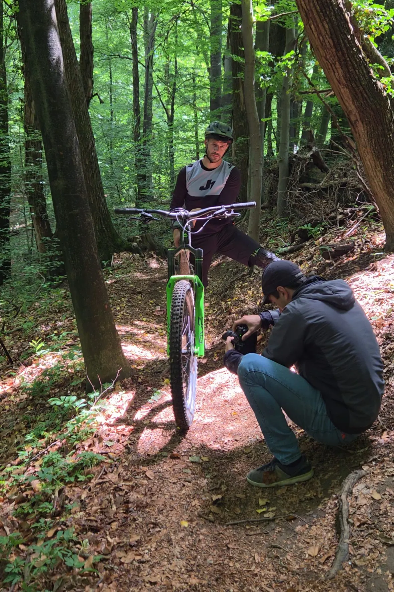
Foto, video e reel in un ambiente MTB autentico.
Corsi commerciali nell'Area Trail: contributo di fr. 100.– per la manutenzione.
Ogni contributo dei nostri sponsor viene reinvestito nel Bikeyard, per tenere i sentieri sempre in condizioni ottimali.
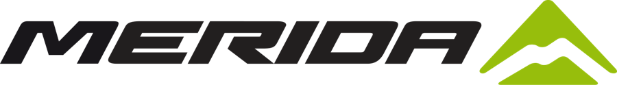
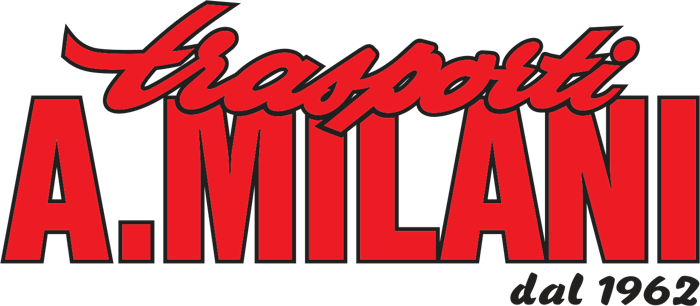
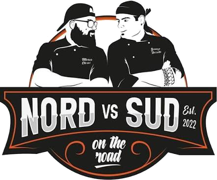
Vuoi sostenere il Bikeyard? Tre formule, da Supporter a Feature Partner.
Diventa partner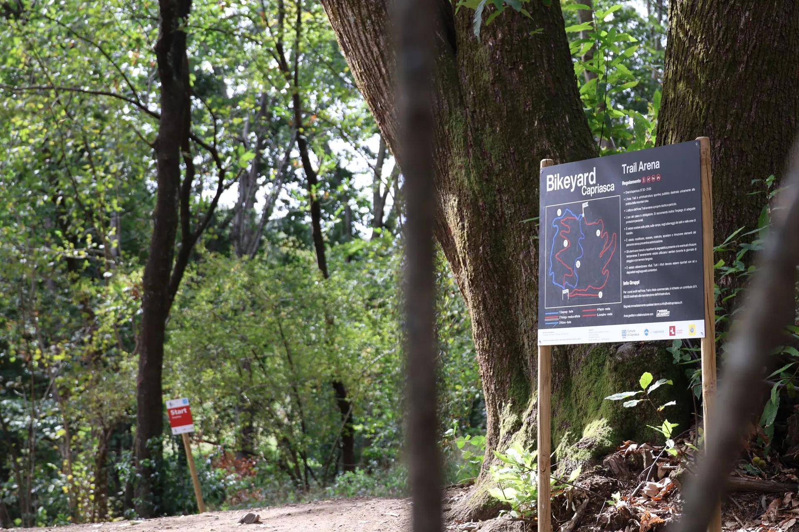
Hai notato un danno? Segnalalo a info@visitcapriasca.ch